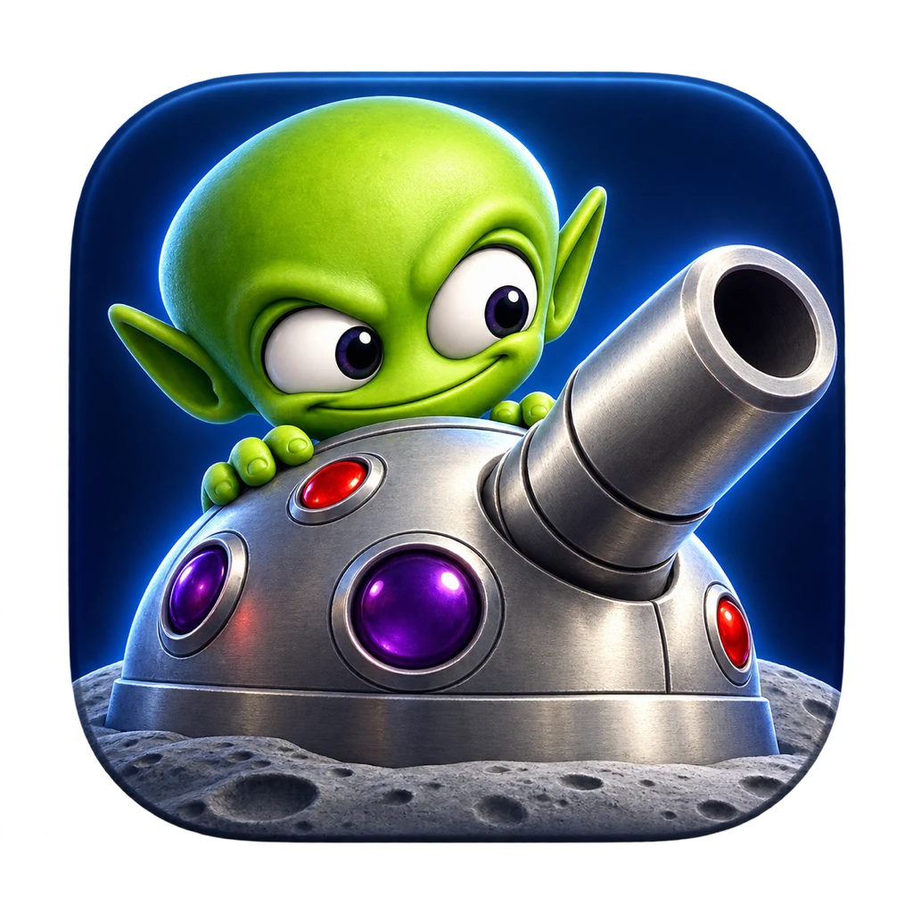
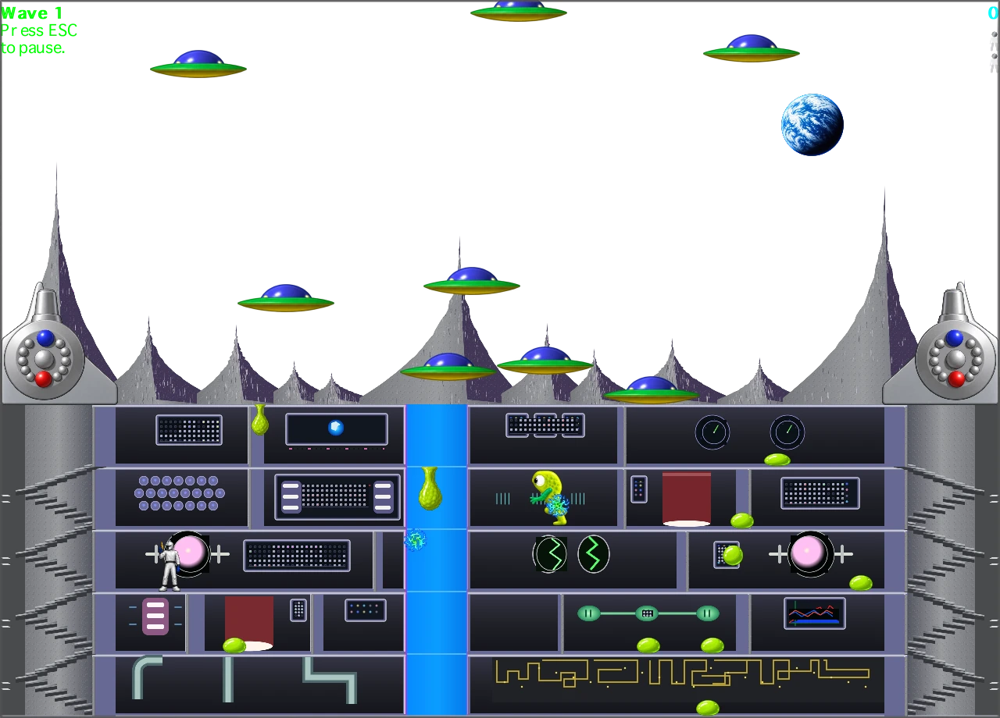
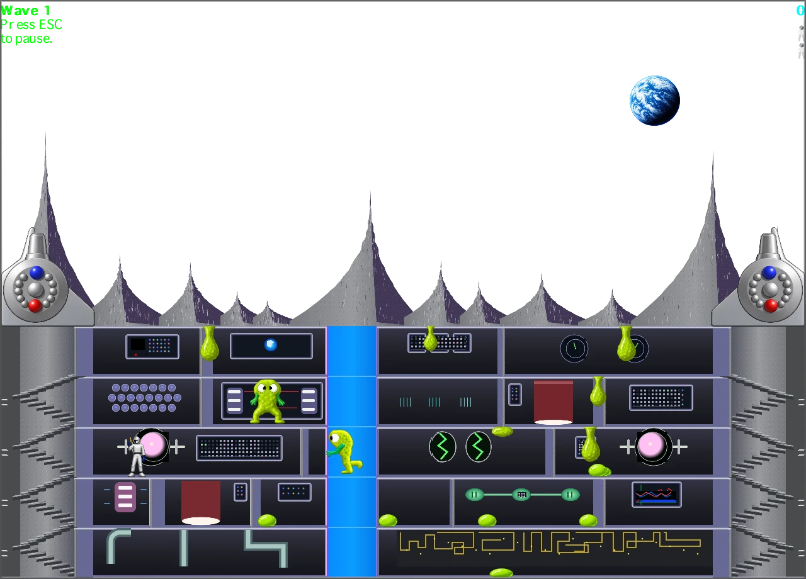
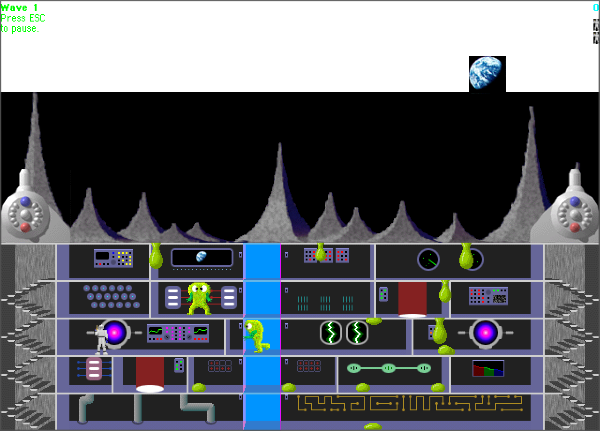

A proper Mac app
Built in Swift with SpriteKit and AppKit. A resizable macOS window, native menus, and artwork that stays sharp on Retina displays.
A MACINTOSH CLASSIC, REBUILT FOR MACOS
Small moon. Big trouble.
The invasion is back. Defend the skies, patrol the station, and keep the moonbase standing in this native macOS port of the classic action game.

A familiar mission.
A new home on your Mac.
01 / THE MISSION

Man the rocket cannons and intercept incoming UFOs. Let a carrier through and it can plant alien pods inside your station.
Head below with your laser pistol. Ride the elevator, take the stairs, and destroy growing pods before they become a much bigger problem.
In solo play, the sky battle comes first, followed by the station. With two players, both happen at once: one on the guns, one fighting inside.
02 / SAME MISSION. YOUR LOOK.
Keep the original pixel artwork or switch to freshly redrawn HD graphics. Familiar shapes, colors, and animation poses carry through both styles.
Switch instantly in the game.
Your mission stays right where it was.


HD graphics. The same game state, freshly redrawn.
03 / MADE TO FEEL FAMILIAR
A careful reconstruction of the original game's rules, rhythms, and character, with the comforts of a modern Mac app.
Built in Swift with SpriteKit and AppKit. A resizable macOS window, native menus, and artwork that stays sharp on Retina displays.
Local two-player action puts a gunner on the surface and a commando in the station. Both players face the invasion at the same time.
Five floors, opening doors, stairs, and the central elevator turn each patrol into a tactical route. Pods grow. Aliens fight back.
Customize keyboard and controller bindings in one settings menu. Each shot takes a separate press, keeping the original deliberate firing rhythm.
UFO formations, rocket trails, alien fragments, teleportation, and bonus rounds bring the moonbase to life in both graphics modes.
The port draws on the original 1.0.4 code and resources. Gameplay fidelity, animation timing, and visual details continue to be refined.
macOS 11 Big Sur or later. Available for Apple silicon and Intel Macs.
THE PROJECT / ACTIVE DEVELOPMENT
Follow the port as it grows, explore the work behind it, or help make the next mission a little better.